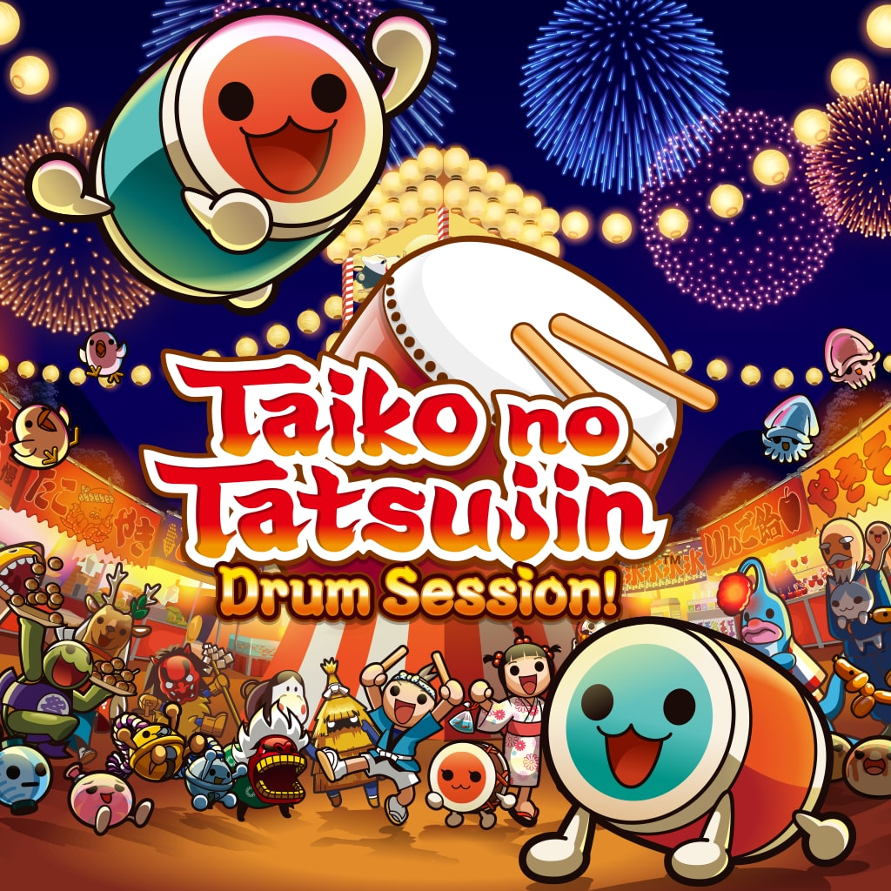
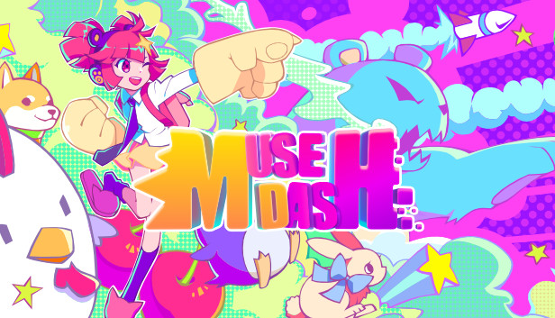

Osu!
Az Osu! egy ingyenes, nyílt forráskódú ritmusjáték, ahol a játékosok különböző zeneszámokra kattintanak.
További információ

Taiko!
A Taiko egy japán dobos ritmusjáték, ahol a játékosok a dobütésekkel követik a zenét.
További információ

MuseDash
A Muse Dash egy színes és dinamikus ritmusjáték, ahol a játékosoknak zenére kell harcolniuk ellenségekkel
További információGeometry Dash
A Geometry Dash egy intenzív ritmus alapú platformjáték, ahol a játékosoknak különböző akadályokat kell átugraniuk és elkerülniük
További információ